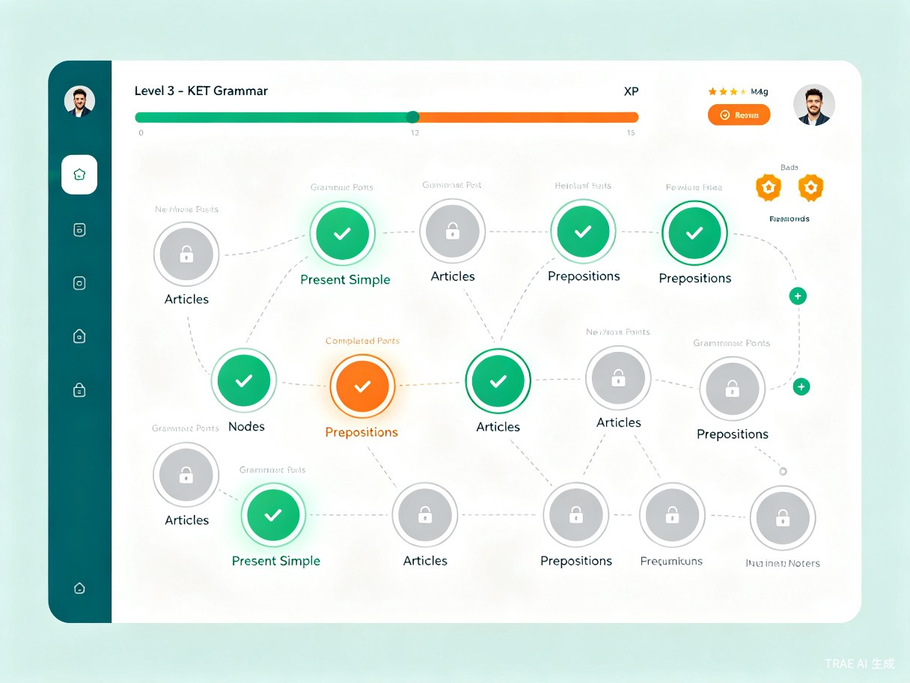

01
创意名称与介绍
创意名称
语法大陆 Grammar Continent
想解决什么问题
英语语法知识点散落在不同教材、教辅和考试大纲中，学生除了依赖老师的经验外，没有一个清晰的语法学习脉络。无论是小学、中学的校内教纲，还是 KET、PET、雅思等标准化考试，学生都难以一目了然地知道自己需要掌握哪些语法点、当前处于什么进度。
为什么会想到做这个
作为学生，在备考各类英语考试时深切体会到语法学习的碎片化困境——课本讲一点、练习册补一点、老师提一点，却始终无法形成完整的语法知识体系。希望借助游戏化的方式，让语法学习变得有路径、有目标、有成就感。
产品形态
网站 / Web 应用 — 基于浏览器访问，支持 PC 端深度学习和移动端随时复习。采用闯关式游戏化设计，将每个语法点呈现为地图上可探索、可攻克的地点。
02
目标用户及痛点
核心用户群体
小学生 / 初中生
KET / PET 考生
雅思 / 托福考生
成人英语自学者
使用场景
- 课后复习巩固 — 学完新课后来到语法大陆，找到对应语法点进行练习和标记
- 考前备考冲刺 — 按照考试类型（KET/PET/雅思）筛选语法点，快速查漏补缺
- 自学路线规划 — 按照年级或考试大纲，系统化地逐个攻克语法点
- 家长监督辅导 — 通过账号体系查看孩子的学习进度，了解哪些语法点已掌握、哪些待加强
当前痛点
- 语法知识碎片化 — 知识点散落在课本、练习册、网课等不同渠道，没有一个统一的知识地图
- 学习进度不清晰 — 学生不知道自己掌握了哪些语法、遗漏了哪些，缺乏全局视角
- 学习缺乏动力 — 传统语法学习方式枯燥乏味，难以坚持，缺少正向反馈和成就感
- 考试要求不明确 — 不同考试（校内/ KET / PET / 雅思）的语法范围不同，学生难以针对性准备
03
价值与意义
效率提升
通过可视化的语法地图和游戏化闯关机制，学生可以精准定位自己的薄弱环节，避免在已掌握的知识上浪费时间。按年级或考试类型筛选功能让备考更加有的放矢，大幅提升语法学习效率。每完成一个语法点的测试即可标记点亮，形成清晰的学习闭环。
04
产品概念展示
核心功能特性
语法大陆地图
将所有语法点可视化为大陆上的地点，按年级或考试类型筛选，一目了然
游戏化闯关
每学习完一个语法点并完成测试，即可点亮标记，获得成就感和正向激励
账号与进度体系
支持注册登录，记录每个人的学习进度，支持家长查看和监督
导出与资料管理
支持导出语法学习报告，未来可接入本地学习资料，形成个人知识库
产品界面概念

产品发展路线
V1
语法地图
构建完整语法知识体系，按年级和考试分类的可视化地图
V2
游戏化闯关
加入测试、点亮、成就系统，账号体系与进度追踪
V3
AI 辅助学习
AI 个性化推荐薄弱点，智能出题，自适应学习路径
V4
开放生态
接入本地学习资料，社区分享，构建个人语法知识库